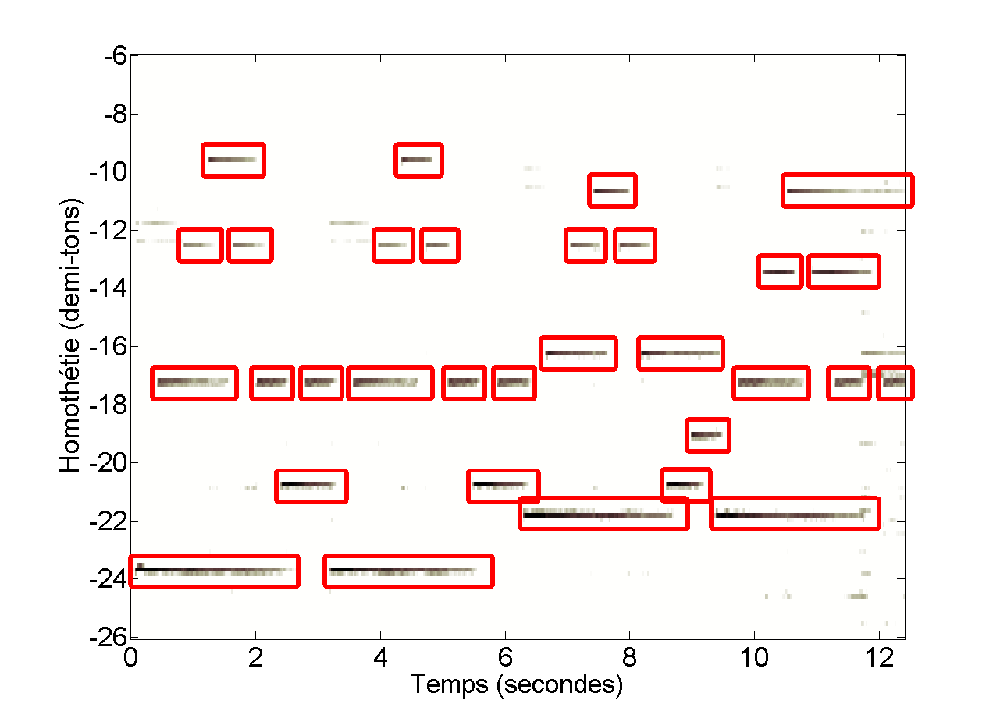

Manipulation d'une note isolée dans un signal polyphonique
Sur cette page est présenté une application de la décomposition proposé dans ce rapport technique.
La décomposition permet d'isoler le signal d'une note dans un signal polyphonique. Il est alors facile de modifier la fréquence fondamentale de cette note individuellement.
Introduction de Because
Dans cet exemple, le spectrogramme des 12 premières secondes du morceau Because des Beatles est décomposé.
Son original :
La carte d'homothétie obtenue lors de la décomposition est représenté ci-dessous. Les notes véritablement jouées sont matérialisées par des rectangles rouges dans la figure. Dans tous ces rectangles, la carte prend effectivement des valeurs importantes.
En modifiant la fréquence fondamentale de certaines notes individuellement, on peut par exemple obtenir :
Son traité :
Introduction de Guaranteed
Ce second exemple est l'introduction de Guaranteed d'Eddie Vedder :
Son original :
Dans cet exemple, nous avons modifié la tonalité :
Son traité :
Introduction de Fantaisie Impromptue
Ce troisième exemple est l'introduction de la Fantaisie Impromptue de Frederic Chopin :
Son original :
Dans cet exemple, nous avons encore modifié certaines notes: